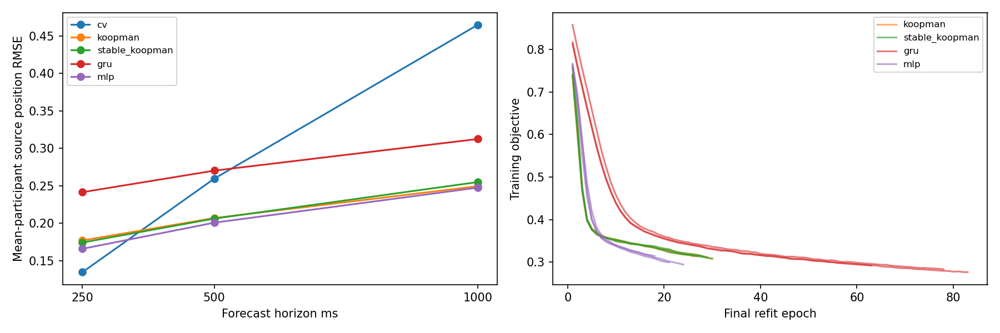

Full Track 2 remains NO-GO. Track 1 is unchanged and scientifically unfinalized. Cohort amendment was explicitly approved after the report's base-v2 M16 count/support mismatch: only the existing frozen six-second contexts enter this diagnostic. No newly reserved participant or independent physical reference was used.
Feasibility gates: FAIL — stop architecture work

| Family | Horizon ms | Position RMSE | Velocity RMSE |
|---|---|---|---|
| cv | 250 | 0.13483998324543242 | 0.5859170166281971 |
| cv | 500 | 0.25960257093252703 | 0.6466520885562095 |
| cv | 1000 | 0.46499985665685173 | 0.5825750106857251 |
| koopman | 250 | 0.17713141947373995 | 0.4309827820628026 |
| koopman | 500 | 0.20702053447172575 | 0.44810700877000414 |
| koopman | 1000 | 0.24956301087406585 | 0.4789060078980445 |
| stable_koopman | 250 | 0.17437171438517235 | 0.430282752797978 |
| stable_koopman | 500 | 0.2063330685811024 | 0.4463546099783986 |
| stable_koopman | 1000 | 0.2550896700263004 | 0.4726268797969482 |
| gru | 250 | 0.2415625890459227 | 0.4295673590210356 |
| gru | 500 | 0.27033630944240505 | 0.4427381322954075 |
| gru | 1000 | 0.31255747199265016 | 0.475758266370246 |
| mlp | 250 | 0.16599683348728295 | 0.4338116277462888 |
| mlp | 500 | 0.2008259582014224 | 0.44900874211248537 |
| mlp | 1000 | 0.24761219984687138 | 0.46948652697542403 |
Intrinsic-normalized source-kinematic targets, not independent physical trajectories. Means aggregate participant RMSE first, then seed medians. Unsupported horizons are masked in loss and remain in the denominator ledger. Two exploratory validation participants do not establish final generalization or calibrated uncertainty. Stable latent eigenvalues do not certify decoded physical forecasts.
Predeclared gates · Cohort audit · Approved amendment · Every forecast/mask · All opportunities · LOPO stopping fits · Integrity checks · Cached-state inference cost · Empty-directory repeat